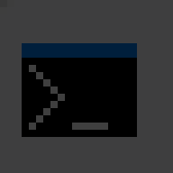
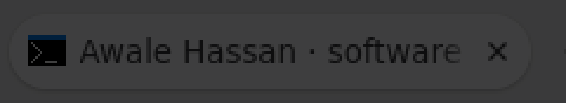
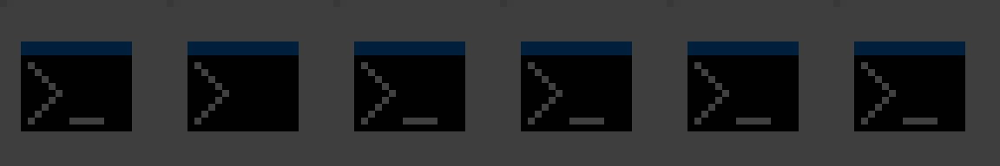
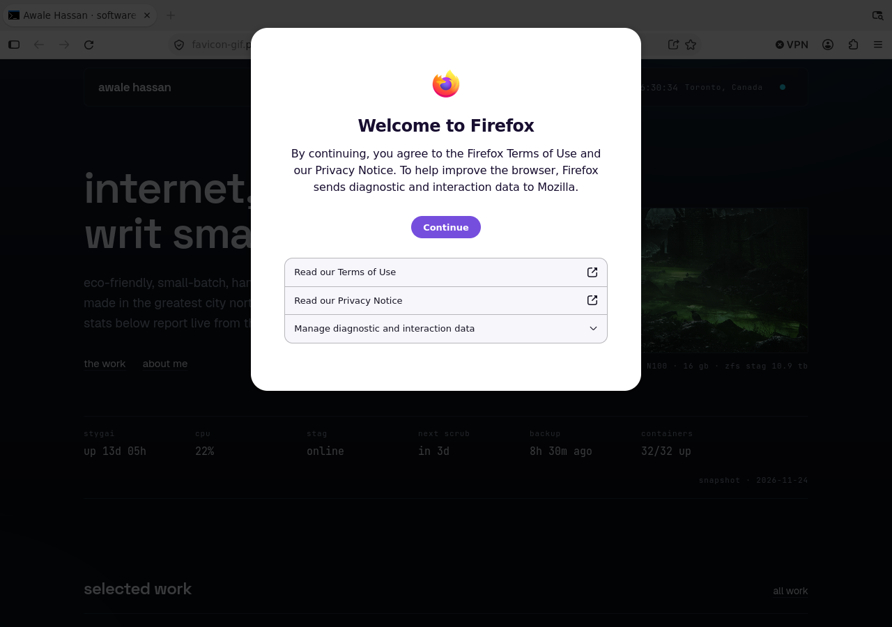

screenshot evidence · 2026-11-27
Firefox 161 favicon proof
The home page tab icon alternates between its two frames in a real headed Firefox 161 window. This was captured from the preview build, not from the headless browser.




how this was taken
- Downloaded the official Firefox 161.0 Linux build from Mozilla.
- Ran it headed on a virtual X display (Xvfb) with a fresh profile and no add-ons.
- Loaded the preview home page and let it settle.
- Captured the root window with ImageMagick every 250ms, then cropped the 24x24 tab icon region from each shot.
The static test pages (/favicon-subtle, /favicon-created,
/favicon-blink) animate the same way. This page records the home
page, which was the one reported static.